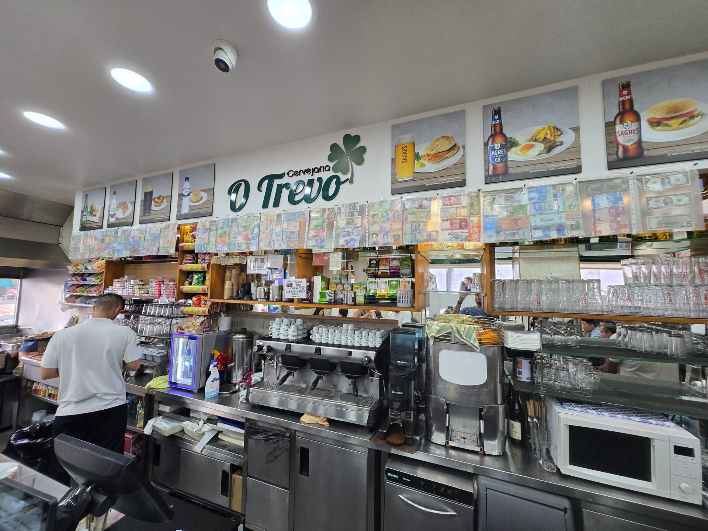
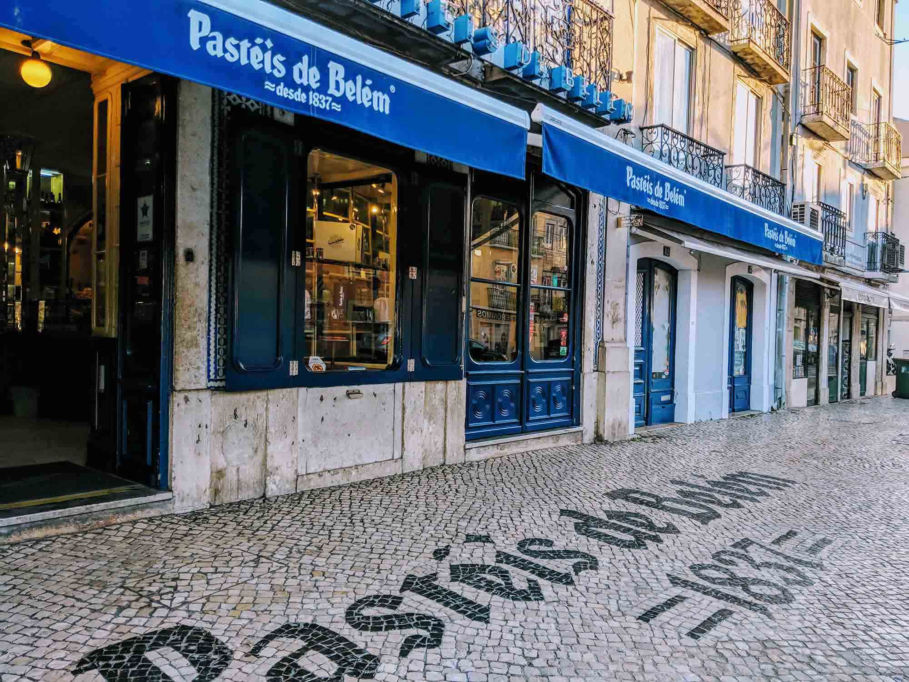
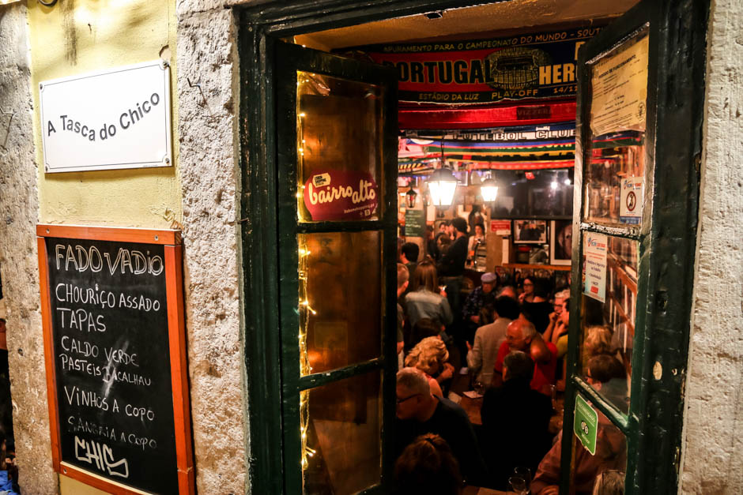

Lisbon Restaurants & Local Eats
From budget-friendly traditional tascas and famous pastelarias to cozy dinner spots, explore Lisbon’s best culinary experiences.

Must Try BifanaO Trevo
Famous local spot in Chiado renowned for serving traditional Portuguese bifanas (marinated pork sandwiches) made fresh and packed with flavor.
- Praça Luís de Camões 48, Baixa-Chiado
- €3 – €6 per person

Iconic BakeryPastéis de Belém
The legendary historic bakery baking original custard tarts according to a secret 1837 monastic recipe, served warm with cinnamon.
- Rua de Belém 84-92, Belém
- ~€1.40 per pastel

Authentic Fado & EatsA Tasca do Chico
Cozy traditional taverna in Bairro Alto famous for affordable petiscos (Portuguese tapas), house wine, and live amateur Fado singing.
- R. do Diário de Notícias 39, Bairro Alto
- €8 – €15 per person
Erasmus Local Tip
Always look out for the "Prato do Dia" (Dish of the Day) at small local tascas during lunchtime! You can usually get a complete meal including a main dish, soup, drink, and espresso for just €7 to €10. Also, keep in mind that appetizers brought to your table (bread, olives, cheese) are not free — if you eat them, they will be added to your final bill!